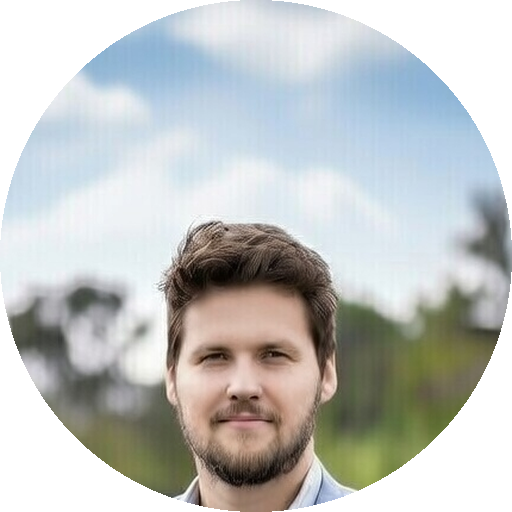

Nic van Dessel
VR collaborator, The Cable Center
Steve is one of the most inspired, innovative and forward thinking individuals I've ever had the pleasure of meeting or working with. Not only was Steve an innovator, but he was an excellent manager.